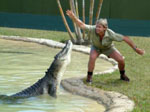
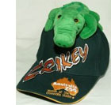
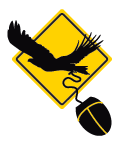

Crocodile Hunter Travel Mug Coloured

Nifty Travel Mug featuring Crocodile Hunter logo. Stainless Steel inside. Lovely gloss and vibrant Green coloured exterior.
»more detailsThe Crocodile Hunter DVD Collection
Exceptional Value - Only $14.95 per Disc*
The most beloved and influential wildlife campaigner of his generation, Steve Irwin brought the... »more details
Read all about the exciting Irwin family! Steve and Terri are the world’s original Wildlife Warriors, and they’ve passed on their passion and sense of adventure to their two gorgeous children, Bindi and Robert. Check out all the latest Irwin news and gossip, and be sure to take a look at their fascinating biographies!
That was too close! Steve has had a few big hits over the years while living the world’s wildest life. Filming wildlife documentaries in extreme conditions is certainly not your average lifestyle, and definitely not for the faint-hearted! Steve is one tough bloke – check out his closest calls so far.
What a little beauty! Take a look at the must-see photographs of the incredible Crocodile Hunters, Steve and Terri Irwin, and some amazing wildlife. You can also check out photos of the entire Australia Zoo Crew – all 500+ of them!
Have you seen the Crocodile Hunter series? Live and relive the wild adventure ride with a set of 6 DVDs. Don’t miss the never-before-seen footage of Steve’s home videos! You can also find your favourite moments in our handy episode guide.
You’ll find all the hottest official Crocodile Hunter merchandise right here! With stacks of toys, books and posters, souvenirs and accessories, the entire series of The Crocodile Hunter on DVD and video, PLUS the Steve Lives Surf Wear, Terri’s Cougar Collection and Bindi Wear and Bindi Wear International clothing ranges, we’ve got every Irwin fan covered!
Are you keen to be the first in the know when Crocodile Hunter news breaks? With over one thousand native and exotic animals, an army of Wildlife Warriors, a brand new television series, an action-packed 24-hour wildlife hospital and one amazingly adventurous Irwin family, there is NEVER a dull moment at Steve Irwin’s Australia Zoo – and we can’t wait to share all our news with you!
Follow Australia Zoo on Twitter